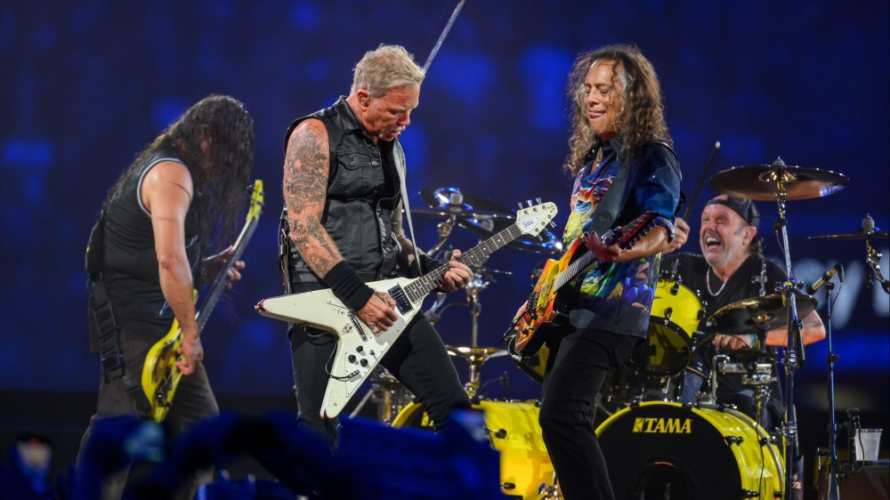
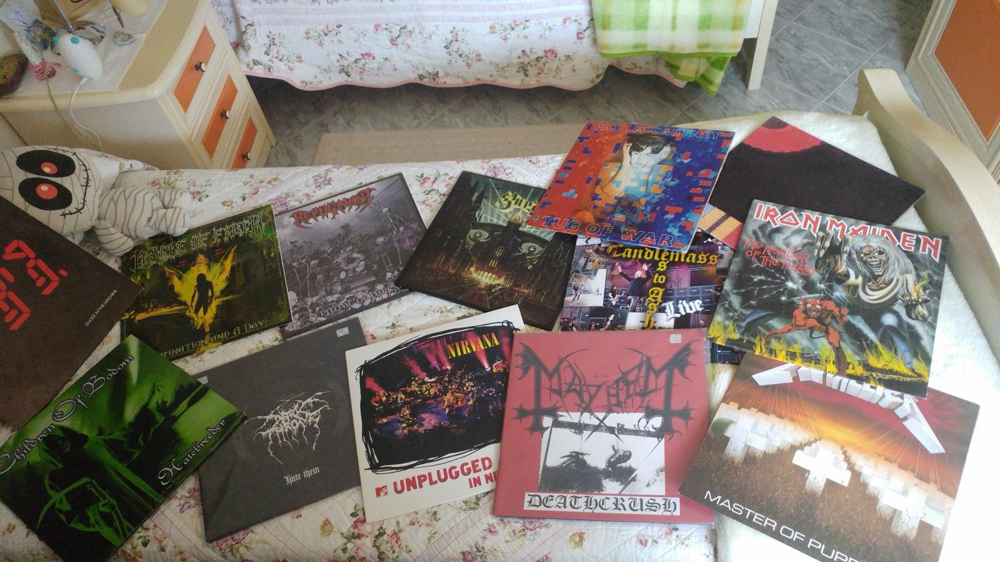

Music is my greatest passion.

I discovered rock and metal music when I was 12, and I immediately became passionate about it. One of the first bands I listened to was Metallica,
which is still my favorite band. I enjoy every subgenre of metal.
In addition to metal, I also listen to a lot of blues—one of my favorite blues artists is B.B. King.
After a couple of years of listening to this kind of music, I decided to start playing the guitar.
Indeed I have been playing the guitar since I was 14. I initially took lessons and later continued as a self-taught musician.
I played as a lead guitarist in a metal band for 8 years, during which we recorded two albums and one EP.
Currently, I enjoy playing at home and creating videos for my Instagram page and YouTube channel.

Another passion of mine related to music is collecting vinyl records and CDs.
I own about a hundred vinyl records and more than 200 CDs.
The genres range from blues to rock, and from 70s/80s metal to more modern metal.
Recently, I’ve been buying only vinyl because I prefer its sound quality.